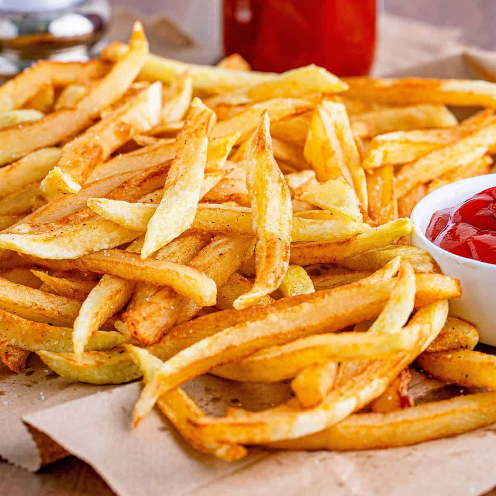

French Fries Recipe

Descriptiom
Best French Fries You Can Make at Home
Ingredients
- Potatoes - 1 per person is more than enough!
- 1qt/ltr cooking oil - peanut oil is best
- Seasonings - I just used salt, but this is where you can get creative!
- Knife for cutting
- Colander for rinsing
- Pot for Frying
Steps
- If you plan to keep the skins on (why wouldn't you!), scrub the potatoes well.
Cut potatoes into 1/4" fry shapes. Or fatter if you like "steak fries." I like em skinny and crisp!
Rinse cut potatoes in a large bowl with lots of cold running water and cover with water by and ice. Refrigerate at least 30 minutes.
- In a large pan (or an electric deep fryer), heat oil over medium-low heat.
If you have a candy thermometer (recommended), heat until the thermometer registers 325oF (165 C).
Make sure that you have at least 3 inches of space between the top of the oil and the top of the pan, as the oil will bubble up and could splatter when the fries are added.
- Drain ice water from cut fries and wrap potatos in a clean tea towel and thoroughly pat dry.
Increase the heat to medium-high and add fries, a handful at a time, to the hot oil.
Fry, stirring occasionally, until potatoes are soft and limp, about 10 minutes.
Using a slotted spoon or sieve, carefully remove fries from the oil and set aside to drain on paper towels.
Let rest for 10 - 20 minutes or so.
- When ready to serve the French fries, reheat the oil to 350oF (175 C).
Transfer the potatoes to the hot oil and fry again, stirring frequently, until you like the way they look, 1-5 minutes. I like em almost burnt, so I left them in pretty long.
Transfer to paper towels again and sprinkle with seasoning to taste. Serve immediately.
So so very yummy.